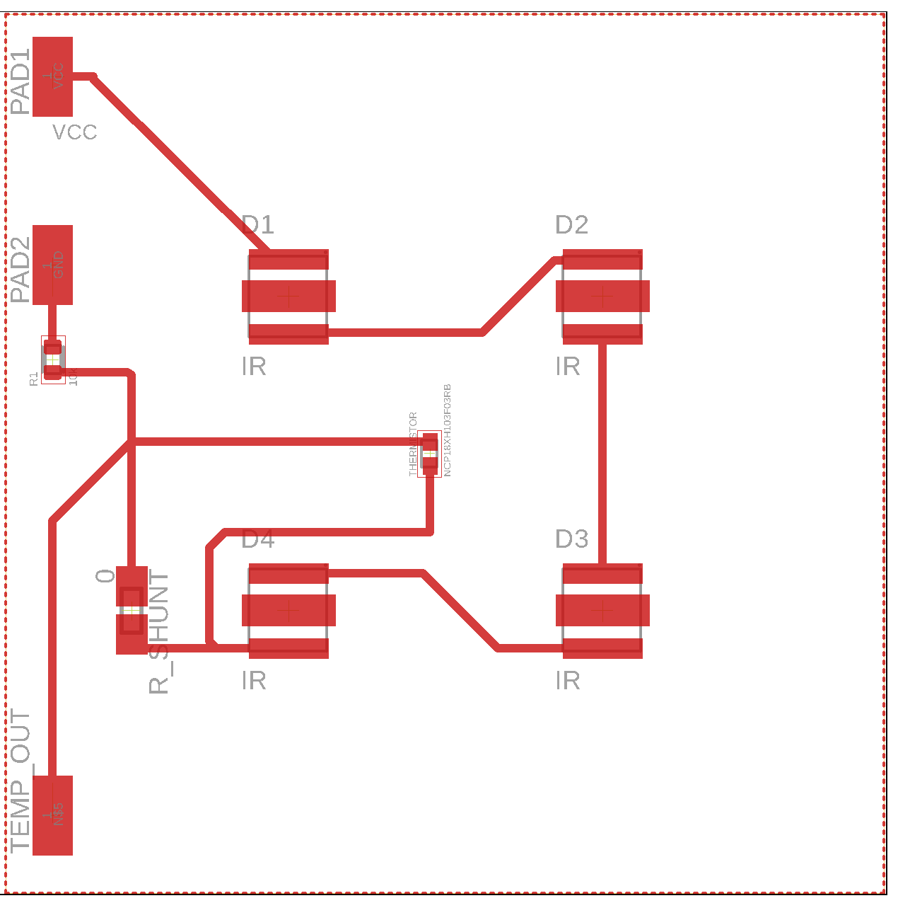

Trasncranial photobiomodulation can increase cognitive funciton and promote a healthy brain. Previous research has shown the effect of 1064 nm light on brain waves, corresponding to improved congitive funciton.
Part of my job as a lab technician at the Gonzaelz-Lima lab is to analyze how a 1064 nm laser wtih a power density of 250 mW/cm^2 affects EEG signals. Below I've included some topo plots I made measuring the change in mean band powers between stimulation and placebo. The laser stimulation corresponds to an increase in mean alpha power and a decrease in mean beta and delta powers.
However, this laser is extremely expensive and inconvenient for most people to actually use on a daily basis - we can't all have $20k lasers in our homes. This necessitates the need for a less expensive and more conveninent light therapy system.
This LED headband device is an attempt at an alternative to the laser, based upon specifications of the laser that have demonstrated congitive benefits and change in EEG.
Target Specifications
Optical power density: 250 mW/cm^2
Wavelength: 1064 nm
Specifications determined by previous research
Dissipate ~3 W of power as heat
LED Forward voltage = 1.5 V
LED Forward current = 1 A
Power (watts) = V (volts)*I (amps)
LED power = 1.5 V*1 A = 1.5 W (per LED)
Total radiated power = 750 mW (from datasheet)
Effeciency = (radiated power)/(LED power)
= 0.75/1.5 = 0.5 = 50%
Total LED power = 4*1.5 = 6 W
Because only 50% efficient, about half of the power goes into optical power
The other half is turned into heat
Heat watts = 0.5*6 = 3 W
Therefore, we must cool 3 W of heat power
Maintain ambient temperature under 35 degrees C
The LEDs will be in close contact with the skin and must therefore be at a safe enough temperature to use. The whole point of this device is to improve health, so burning skin upon contact is literally the opposite of the goal.
Device Modules
LEDs
This module will consist of 4 high-powered infrared LEDs arranged in a 2x2 cm^2 matrix. In other words, the LEDs will form a square. The LED PCB will be made from aluminum and will be mounted to a heat sink and fan for effective heat dissipation. A thermistor will be connected to continuosly monitor ambient temperature using a microcontroller.
Cooling unit
A heat sink with an integrated fan will be used to dissipate the 3 W of heat from the LEDs. The LED PCB will be mounted to the heat sink fan with a thermal interface paste. In addition to dissipating 3 W of heat, the cooling unit must also maintain LED ambient temperature to be safe enough to use, since these LEDs will be in close contact with the skin.
Power supply
A portable battery bank (PD) will supply power to the device.
Specifically, it will power the LEDs, microcontoller, and heat sink fan.
To power LEDs, the PD will be connected via usb-C to a trigger that would output the necessary voltage, like 9 or 12 V. This trigger will then be connected to a buck boost converter that will serve as a constant current source for the LEDs.
The power bank will also power the fan to cool the heat sink. Additionally, it will also power an Arduino to monitor temperatures.
Head band
The headband will need to be a one-size-fits all type deal so anybody can use it. The headband will have a hole big enough to let the LED through the band. In addition, there must be mounting connectors embedded within the headband to mount the LED PCB/cooling unit. For example, the Muse S eeg headband has a hole in the headband to let light through in addition to having connectors embedded to mount the processing unit. I aim to achieve a similar design.
This project is separate from the LED device I am developing at the Gonzalez-Lima lab. The design of this particular device utilizes different circuit components and a thermal dissipation system. This makes it more portable and cheaper than the device being developed at the lab. All knowledge aquired in order to build this device is open source and can be found on the internet. Research regarding the device specifications was made possible by the Gonzalez-Lima lab. I am developing this device on my own time with my own resources, and therefore, the implementation of this project is my own.